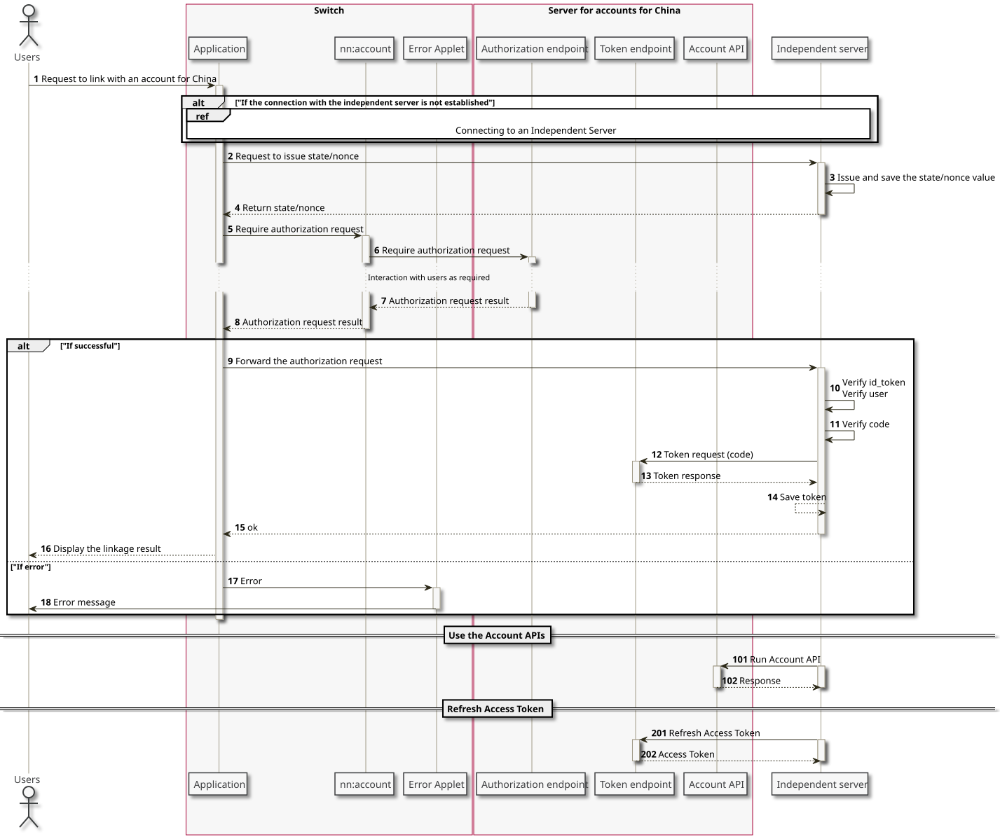

This section describes the standard linking sequence.
Link Sequence
The procedure for linking accounts for China to Switch applications and the independent servers is mediated by nn:account.

| Number | Description | ||||||||||||||||||||||||||
|---|---|---|---|---|---|---|---|---|---|---|---|---|---|---|---|---|---|---|---|---|---|---|---|---|---|---|---|
| 1 | The user begins the process of linking an account for China by performing an operation in the Switch application. | ||||||||||||||||||||||||||
| 2-4 |
If the application is not connected to the independent server at this time, the procedure described in 3 Connecting to an Independent Server is performed. The independent server generates a |
||||||||||||||||||||||||||
| 5 |
The following parameters, which include the values for
|
||||||||||||||||||||||||||
| 6-8 |
The authorization procedure starts if the login status of the account for China is abnormal, or if the user has not approved the application making the request.
|
||||||||||||||||||||||||||
| 9 |
The Switch application sends the obtained response request to the independent server. You can send this data by any method, but make sure that you encrypt the communication channel. |
||||||||||||||||||||||||||
| 10 |
Verification of the ID token and authentication of the user. For more information about the verification method, see the 5.7 ID Tokens page. |
||||||||||||||||||||||||||
| 11 |
The authorization code sent from the application is verified using the value of |
||||||||||||||||||||||||||
| 12-13 |
Performs a token request using the authorization code.
If the token request is successful, the following tokens can be obtained.
|
||||||||||||||||||||||||||
| 14-16 |
The application is linked to the internal ID of the account for China, if necessary, and then the access token and request token are saved. |
||||||||||||||||||||||||||
| 101 |
The access token can be used to run the account API. For more information, see the 5.8 Account API section of this document. |
||||||||||||||||||||||||||
| 201 |
If the access token has expired, it can be reacquired using the refresh token. For more information, see the 5.6 Token Requests section of this document. |
Notes When Linking
The internal IDs for accounts for China are always unique within a single server environment. However, uniqueness is not ensured across multiple server environments.
Because the independent server connects with Nintendo servers in multiple environments, identify the account for China using the combination of the iss value in the ID token (or its FQDN) and the internal ID.
If your independent server is linked to both network service accounts and accounts for China, also note that these links might be severed or changed via operations conducted by Nintendo.
Do not act on your own accord with the independent server to convert the internal ID of an account for China to the internal ID of a network service account, or vice versa.
When the Requested Scope Is Not Authorized
For a scope that does not require authorization, the processing might advance without user authorization. In such cases, use a sequence that does not confuse the user. For example, avoid the repeated display of authorization without any explanation to the user. We recommend advancing the process using only the information that can be obtained with the authorized scope.
Any scope data authorized by a user can be acquired as a response during token requests.
CONFIDENTIAL